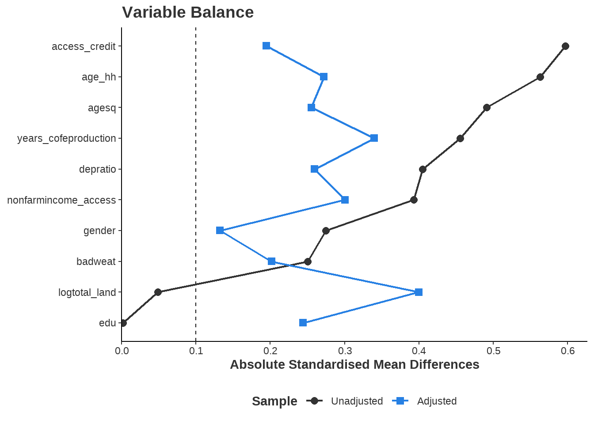

1.1 A Conventional Approach: Propensity Scores and Balance
In a randomised control trial (RCT), researchers believe treatment and control groups are similar because of randomisation and so the average treatment effect is a contrast of means from ?@eq-ate-estimate. In observational data, the exposure to a given treatment is not random, implying there may be systematic differences between groups. As groups are not comparable, ?@eq-ate-estimate will lead to a biased estimate of the treatment effect. For example, consider the causal question: “How much does attending university increase lifetime earnings?”. Individuals who complete a bachelor’s degree are not selected at random for university programs (treatment) and may have different observable characteristics than those who do not attend a university (control). Perhaps those who attend university have higher academic abilities, higher motivation, or grew up with parents who have professional jobs. Because of these systematic group covariate differences, a simple comparison of mean income could lead to attributing university attendance as the cause of higher incomes when the effect is confounded by the differences in covariates between groups. This discussion introduces the idea of covariate balance which is a key concept behind underlying propensity score methods.
Note 1: What is Covariate Balance
Covariate balance is the idea that covariates are approximately equivalent across treatment and control groups and implies exchangeability between observations. Recall that defining unconfoundedness as ?@eq-independence also implies exchangeability, implying that covariate balance should eliminate the confounding effect of variables associated with both the treatment and the outcome. If the distributions of the covariates are the same for each group, then those covariates are balanced, implying exchangeability with respect to those covariates.
From our bachelor’s degree example, suppose that comparable treatment and control individuals are matched together to create balanced pairs. All pairs have the same academic ability, motivation, parent income, geographic residence etc. Comparing our matched pairs should result in a robust estimate of the effect of a bachelor’s degree on earnings, as the individuals are exchangeable by definition. However, there is a serious dimensionality problem and exact matches cannot be made as the number of matched covariates increases.
Rosenbaum and Rubin (1983) offers a valuable tool for analysing observational data called the propensity score. The propensity score is the probability of treatment assignment conditional on observed covariates and reduces the dimension of the number of covariates to a single dimension. The propensity score, denoted as \(e(X)\), it is expressed as:
\[
e(X)=P(T=1|X)
\tag{1}\]
Conditioning on this propensity score should balance the data and meet the conditional independence assumption stated in ?@eq-conditional-independence. There are many sources that offer a comprehensive guide to propensity score methods.1
Note 2: Balance and Propensity Scores
Note that an RCT will satisfy ?@eq-independence as randomisation implies the potential outcomes are independent of the treatment assignment. Propensity score methods aim to satisfy ?@eq-conditional-independence as the potential outcomes are independent of the treatment status conditioned on some covariates. Conditioning on the propensity score aims to replicate an RCT in the observational data by balancing covariates between groups. We desire that, when units are balanced on their propensity score, differences in outcomes can be confidently attributed to the treatment itself, rather than to pre-existing differences in covariates. The variables used to predict the propensity model are said to be conditioned on.
Two common methods that use propensity scores are propensity score matching (PSM) and inverse propensity weighting (IPW). PSM creates matched pairs with similar propensity scores. IPW creates a balanced pseudo-population, where observations are weighted on the inverse of the propensity score. The pseudo-population is created by up-weighting observations with a low propensity score and down-weighting observations with a high propensity score.
King and Nielsen (2019) provide a notable criticism of propensity score matching, which is a very interesting read. In the following examples, IPW is used due to theoretical advantages and ease of software implementation.
1.1.1 Propensity Score Modelling with Logistic Regression
A conventional propensity score model most commonly uses logistic regression to predict a probability between \(0\) and \(1\). Model specification may include interaction terms and polynomial terms to best achieve covariate balance. There are a range of approaches for specifying a propensity score model, but the process is driven by heuristics (Brookhart et al. 2006; Heinrich 2010). One suggestion is to include two-way interaction terms between covariates and squared terms and then remove terms which are statistically significant. Many researchers do not discuss the specification of their propensity model in papers. Austin (2008) review 47 papers that use propensity scores and few assess balance, perform adequate model selection and diagnosis, or apply correct statistical tests.
It’s important to note that the true value of a propensity score is never observable. A propensity score that is close to the theoretical probability is well calibrated. Using poorly calibrated propensity scores may result in poor balance and biased estimation of the treatment effect. The calibration of propensity scores depends on correctly specifying the model used to estimate them. Covariates may be omitted by error, poorly measured, or be unobservable. If the true relationship is non-linear or involves complex interactions between covariates, logistic regression may not predict calibrated scores. Another important note is that the propensity model itself does not have an informative causal interpretation. In logistic regression, the coefficients are the log-odds of the treatment assignment for a variable which is not informative of the desired estimand.
The first application of machine learning in causal inference was to predict propensity scores. Despite this, logistic regression still appears to be the most common model for predicting propensity scores.
1.2 Probability Machines: Probability Theory and Machine Learning
Predicting probabilities is not a typical machine learning task. Supervised machine learning usually focuses on classifying observations into groups, or regression to predict continuous outcomes. Probability prediction is a hybrid of these tasks, aiming to predict the continuous probability that an observation will belong to a certain class. In this context, these applications are sometimes called probability machines.
Probability machines are valuable in applications requiring calibrated probability predictions. Probability machines can predict loan defaults or other adverse events in finance. They estimate the likelihood of customer response to a campaign in marketing. In criminal justice, they help forecast recidivism or future arrests, informing parole decisions. Weather forecasting uses probability machines to predict events like the chance of rain. Gamblers and bettors want robust probability predictions to enhance their betting strategies. Probability machines can be applied wherever calibrated probability predictions are needed.
Probability machines offer many advantages over parametric methods like logistic regression:
Improved Calibration: Probability machines often provide better-calibrated predictions by capturing complex data relationships.
Flexible Modelling: Unlike parametric methods like logistic regression, probability machines don’t rely on assumptions of additivity or linearity, allowing them to model intricate relationships that parametric models miss.
Efficient Feature Selection: These machines automatically select features, making them ideal for high-dimensional datasets where manual selection is impractical.
Handling Missing Data: Probability machines handle missing data robustly, minimizing the need for extensive data reprocessing and imputation.
Simplified Data Exploration: By exploring complex data structures in a data-driven way, probability machines simplify model specification. For instance, tree-based models remain unaffected by adding squared or interaction terms, streamlining the modeling process.
In causal inference, probability machines can predict propensity scores to maximize covariate balance and better estimate treatment effects. The first use of machine learning in economics and social sciences was for predicting propensity scores, driven by strong theoretical and practical motivations. This discussion aims to clarify the use of probability machines in causal inference given the sometimes unique requirements of propensity score specification. Probability machines are theoretically complex and there are unanswered questions in this space.
Please note that this chapter assumes a reader is familiar with CART (Classification and Regression Tree), Boosting, Bagging (Bootstrap Aggregation), Random Forests, LASSO (Least Absolute Shrinkage and Selection Operator, and Logistic Regression. These methods are briefly discussed in ?@sec-background-ml.
1.2.1 Choice of Loss Function and Probability Prediction
The loss function measures the difference between a model’s predictions and the actual target values, serving as an measure of the model’s performance. The model with the lowest error is found when the loss function is minimised. In standard least squares regression, the loss function is the residual sum of squares that can be stated as: \(\text{RSS} = \sum_{i=1}^{n} (y_i - \hat{y}_i)^2\). This loss function says that the model must reduce the squared differences between the observed and predicted values. Different loss functions influence the model’s behaviour and so the choice of loss function is important.
Classification models determine the category to which each observation belongs. For instance, in fraud detection, banks use classifiers to distinguish between fraudulent and routine transactions. Another example is in email filtering, where classifiers are used to predict whether or not an email is spam. Given these binary classification objectives, many loss functions minimize classification errors and improve accuracy.
A probability machine might employ a classification approach suitable for binary outcomes. While a loss function like the Gini (introduced in ?@sec-background-cart) index is effective for classification problems, its effectiveness in calculating class probabilities is uncertain. In other words, minimizing misclassification error may not lead to accurate probability predictions.
To classify an observation as either \(A\) or \(B\), a model needs to determine if \(P(A)\) is less than or greater than \(0.5\). Thus, it is trivial if the probability of that classification is \(0.51\) or \(0.99\) as this makes no difference to the classification. For a probability machine, the difference between \(\hat{P}(A) = 0.51\) and \(\hat{P}(A) = 0.99\) is extreme. Understanding that classification models are optimized for classification accuracy rather than probability prediction is important. This distinction affects the performance of ensemble methods like random forests or bagging ensembles which use classification trees.
1.2.2 Bagging and Random Forest as Probability Machines
In a bagging or random forest ensemble, class probabilities are determined through a vote count method. Each tree in the ensemble makes a class prediction based on the majority class in a terminal node. For instance, if \(x_i\) lies in a terminal node where \(80\%\) of the observations are classified as \(A\), that individual tree will classify \(x_i\) as \(A\). The ensemble’s overall prediction for \(x_i\) is derived from the proportion of trees that classify \(x_i\) as \(A\) or \(B\). Let \(T\) be the total number of trees and \(b_t\) be the \(t\)-th tree in the ensemble. Let \(\mathbb{I}(b_t(x_i) = A)\) be the indicator function that returns \(1\) when \(b_t\) predicts that observation \(x_i\) belongs to class \(A\). The probability of class \(A\) for observation \(x_i\) is calculated as:
In discussing the theoretical properties of random forests and bagging ensembles for probability predictions, Olson and Wyner (2018) notes a potential bias towards predictions of \(0\) or \(1\) when trees in an ensemble are highly correlated and a voting mechanism is used. When trees in an ensemble are highly correlated, a vote count method can bias predicted probabilities towards \(\hat{P}(x_i=A) \in \{0,1\}\) because each individual tree gives an identical prediction for each \(x_i\). Across the whole ensemble, probability predictions will bias towards \(0\) or \(1\). Although having an ensemble of identical trees is unrealistic, the notion illustrates that tree correlation can introduce a divergence bias. Notably, divergence bias is not problematic in classification applications, as a larger number of trees correctly classifying the observation is encouraging.
However, divergence bias is problematic in probability applications. If \(x_i\) has a known membership of \(A\), and an unknown \(P_{\text{true}}(x_i=A) = 0.6\), the ensemble might classify \(x_i\) correctly \(90\%\) of the time leading to \(\hat{P}(x_i=A) = 0.9\). As a probability machine, the ensemble has overestimated the probability by \(0.3\) even though \(90\%\) accuracy is excellent. To predict \(P_{\text{true}}(x_i=A) = 0.6\), an ensemble would need to incorrectly classify \(x_i\) in \(40\%\) of its trees. However, random forests are designed to maximize classification accuracy and there is no incentive for the model to intentionally achieve a specific misclassification rate that aligns with the true probability.
To reduce tree correlation, bagging ensembles use bootstrap aggregation and train each tree on a randomly selected subset of the data. Random forests further reduce tree correlation by considering only a random number of variables at each split, referred to as \(mtry\). When \(mtry\) is near to to number of predictors, the model considers more variables at each split, making the random forest closer to a bagging ensemble. A lower \(mtry\) should reduce the correlation between trees and decrease divergence bias, but a lower \(mtry\) also introduces other theoretical problems.
Consider the scenario where the binary outcome of the ensemble is strongly related to a single predictor and weakly related to other noisy predictors. If \(mtry\) is low then each split may not consider the strong predictor and more commonly splits on weak or noisy predictors. For example, each predictor has a chance of \(\frac{mtry}{\text{number of predictors}}\) of selection at each split implying a lower \(mtry\) decreases the chance of a split considering the strong predictor. Splits on the weak or noisy predictors may not result in a meaningful increase in node purity and successive splits may result in impure terminal nodes that poorly predict the class of \(x_i\) in each tree. Additionally, consider there is a class imbalance and the majority of obvervations are classified as \(A\) not \(B\). If sucessive noisy splits result in impure terminal nodes, then terminal nodes may be dominated by the majority class \(A\). Consequently, there is a majority class effect as each tree in the ensemble is more likely to misclassify an observation as an \(A\) because the terminal nodes have a higher proportion of \(A\) due to the higher proportion of \(A\)’s in the data overall.
To exemplify this theoretical discussion, consider the National Supported Work (NSW) programme, which is a commonly discussed dataset in causal inference. The data results from a randomized controlled trial with \(445\) total participants, \(185\) in the program group, and \(260\) in the control group, so the true probability of treatment for each individual can be calculated as \(185/445=0.42\) or \(42\)%. Further information about this data is found in ?@sec-data-nsw-jobs.
Randomisation should ensure that the probability of treatment is independent of the predictors and so all predictors should be noisy or weak. Although Figure 2 and Table 1 do suggest some covariates do have a greater impact on the probability of participating in the programme, which echoes research by Smith and Todd (2005) who suggests that self-selection bias is prevalent in the NSW data.
Figure 1 shows both divergence bias and majority class effect using randomForest to fit both the random forest and bagging ensemble. Recall that a bagging ensemble is a random forest model when \(mtry\) is equal to the number of predictors and so specifying mtry = 7 in the randomForest function will fit a bagging ensemble. Logistic regression using the gbm() function provides a meaningful comparison.
Show the Code to Create the Plot
library(randomForest)set.seed(88)nsw_formula <-as.formula(as.factor(treat) ~ age + educ + re75 + black + hisp + degree + marr)logit_preds <-glm(nsw_formula, data = nsw_data, family =binomial())$fitted.values rf_mtry1_preds <-predict(randomForest(nsw_formula, mtry =1, data = nsw_data), newdata = nsw_data, type ="prob")[, 2]bagging_model <-randomForest(nsw_formula, mtry =7, importance =TRUE, data = nsw_data)bagged_preds <-predict(bagging_model, newdata = nsw_data, type ="prob")[, 2]library(ggplot2)plot_pmachines <-function(preds, title) {ggplot(nsw_data, aes(x = preds, fill =factor(treat))) +geom_density(alpha =0.6, size =0.6) +scale_fill_manual(values =c("#e5e5e5", "#2780e3"), labels =c("Control", "Participants")) +labs(subtitle = title, x ="Propensity Scores", y ="Density", fill ="Group:") +scale_x_continuous(expand =expansion(0), limits =c(0,1)) +scale_y_continuous(expand =expansion(0), limits =c(0,10)) + custom_ggplot_theme}p1 <-plot_pmachines(logit_preds, "Logistic Regression") +xlab(NULL) +theme(legend.position="none") +annotate(geom ="curve", x =0.6, y =5, xend =0.42, yend =0, curvature = .3, arrow =arrow(length =unit(2, "mm"))) +annotate(geom ="text", x =0.6, y =5, label ="True Probability", hjust ="left", color ="#333333", size =3, family ="Source Sans Pro")p2 <-plot_pmachines(rf_mtry1_preds, "Random Forest (mtry = 1)") +xlab(NULL) +theme(legend.position="none")p3 <-plot_pmachines(bagged_preds, "Bagging (Bootstrap Aggregation)")library(patchwork)p1 / p2 / p3 +plot_annotation(title ="Density Plots of Propensity Scores for NSW Data")
Figure 1: This figure compares the kernel density estimates of propensity score of each observation in the National Supported Work programme. The random forest and bagging ensemle are fitted with the randomForest default value of 500 trees.
Show the Code to Create the Plot
library(ggplot2)library(tidyverse)imp <-as.data.frame(importance(bagging_model))imp <-cbind(vars =rownames(imp), imp)imp <- imp[order(imp$MeanDecreaseGini),]imp$vars <-factor(imp$vars, levels =unique(imp$vars))imp %>%pivot_longer(cols =matches("Mean")) %>%ggplot(aes(y = vars, x = value, fill = name)) +geom_bar(stat ="identity", width =0.8, show.legend =TRUE, position =position_dodge(width =0.8), color ="black", size =0.6) +facet_grid(~factor(name, levels =c("MeanDecreaseGini", "MeanDecreaseAccuracy")), scales ="free_x") +scale_fill_manual(values =c("#e5e5e5", "#2780e3")) +scale_x_continuous(expand =expansion(c(0, 0.04))) +labs(title ="Variable Importance",x ="% Decrease if Variable is Omitted from Model",y ="Variable Name" ) + custom_ggplot_theme +theme(legend.position ="none" )
Figure 2: The figure compares the variable importance assigned to each variable from a baggin ensemble. The data originates from the National Supported Work programme. The difference in relative important of some variables indicates that randomisation may not have created exchangability between the groups.
The logistic regression model has identified a central tendency and most probabilities are between \(0.25\) and \(0.75\) which roughly aligns with the true probability. For the random forest with \(mtry=1\), a significant number of the treatment and control observations are centred near \(0\) with a wide range of other predictions. Such behaviour is consistent with a model overly predicting the majority class and having unstable predictions otherwise. The bagging ensemble has clear evidence of divergence and the majority of predictions are outside \(0.25\) and \(0.75\). Compared to the theoretically true probability, both random forest and bagging ensembles have performed poorly.
The tuning of \(mtry\) faces double jeopardy and is another important area of discussion in probability machines. The selection of \(mtry\) is typically completed in with a classification loss function such as accuracy or out-of-bag error. Olson and Wyner (2018) compares tuning \(mtry\) measured by classification accuracy and mean square error of known simulation probabilities and finds that the optimal value of \(mtry\) for classification differs greatly from for probability prediction.2 In other words, if a grid search finds that \(mtry=3\) is optimal for a classification task, this does not imply that \(mtry=3\) is optimal for predicting probabilities.
Random forests and bagging ensembles seem to be troubled as probability machines but this does not mean that bagging and random forest cannot perform well. In various simulation studies, they perform excellently as discussed in Section 1.2.5. Perhaps the nature of the data is informative for the potential success of a random forest or bagging ensemble.
Anecdotally, divergence bias and majority class effects will most effect a probability machine when there is considerable overlap between groups. If there is overlap and a central region of true probabilities, then the effects of divergence bias may be very pronounced. Similarly, common overlap may make it even harder to increase purity in child nodes, as the covariates will lack clear split points. When combined with weak predictors relating to a low \(mtry\), the terminal nodes of each tree may be relatively impure leading to a majority class effect. Alternatively, if true probabilities exist near \(0\) or \(1\) and there is a clear separation of class, divergence effects may trivially effect probability estimation as the probabilities already exist in that region. If there is a clear separation of class, then weak predictors relating to a low \(mtry\) may still create meaningful splits and pure terminal nodes. It is worth noting that propensity score methods require datasets with overlap to meet the assumptions required to determine causality.
1.2.3 Gradient Boosting Machines as Probability Machines
Moving beyond classification trees in random forests or bagging ensembles, Friedman (2001) introduced the Gradient Boosting Machine (GBM). A GBM sequentially constructs CART trees to correct errors made by previous trees. Employing a gradient descent process, each new tree is fit on the pseudo-residuals of the previous iteration. This means that with each iteration, the GBM takes a gradient step down the global loss function, incrementally minimizing the loss until it reaches its minimum.
GBM’s can be be generalised to many different applications by providing different loss functions that can be specified as any continuously differentiable function. For binary outcomes, a GBM employs multiple boosted regression trees and a logistic function to transform regression predictions into probabilities. This logistic function is the same as in logistic regression, and so a GBM with a binary class is sometimes called boosted logistic regression. The ensemble aims to minimize the Bernoulli deviance, which is equivalent to maximizing the Bernoulli log-likelihood function. The model is expected to be well-calibrated, as maximizing the log-likelihood ensures that the predicted probability distribution is as close as possible to the true probability distribution given the data. The GBM outputs probability predictions, avoiding the issues associated with vote count methods used by random forests and bagging ensembles.
Additionally, each split considers all variables and makes the most informative splits that descend the loss function most effectively. GBMs utilize many weak learners, where each learner is only slightly better than random guessing. These weak learners are often regression stumps, which are CART models with only a single split. However, additional splits enable the model to capture interactions between terms which may increase performance in complex or high-dimensional datasets.
By outputting probability predictions and avoiding the flaws of vote methods in other ensemble techniques as well as allowing a probability distribution based loss function optimal for probability prediction, GBMs stand out as a highly effective probability machine. The implementation and workflow to fit a GBM for propensity scores, is discussed in Section 1.3.1.
1.2.4 Overfitting
Overfitting is a common concern when fitting machine learning models, as models can capture noise and random variations in the training data. An overfit model will typically show excellent performance on the training data but will perform poorly on new, unseen data because it cannot generalise beyond the specific patterns of the training set. For instance, consider a machine learning algorithm used by a bank for fraud detection. In this scenario, an overfit model would struggle to classify transactions correctly as it has learned the noise and specific variation in the training data rather than the underlying patterns of fraud. Cross validation or test/train splitting is used to prevent overfitting to ensure a model can generalize to unseen data.
However, the model is not required to generalise when predicting propensity scores, as a different propensity score model is fit for a other datasets. Instead, the emphasis of predicting propensity scores is to create balance in the data. A model is effective if it balances covariates between groups, even if it is overfit in a conventional sense.
Note 3: Overfitting in Logistic Regression
There is limited research on how overfitting a logistic regression model affects estimating treatment effects. In logistic regression, overfitting occurs when there are too many parameters and so the maximisation of the log-likelihood function is difficult because of noise. One study that investigates overfitting in this context is Schuster, Lowe, and Platt (2016), who suggest a general rule that the number of observations per parameter should be between 10 and 20. When overfitting occurs, the variance of the estimated treatment effect increases because noise amplifies the magnitude of the coefficients, resulting in a small bias towards \(0\) or \(1\) because of properties of the logit function. Specifically, when using (non-augmented) propensity score weighting, the estimate of the treatment effect will have high variance as propensity scores close to \(0\) or \(1\) receive artificially inflated weighting.
Lee, Lessler, and Stuart (2010) simulates a comparison of machine learning methods for propensity score prediction and finds that an overfit CART model performs better than a pruned CART model in terms of balance and treatment effect estimation bias. While not conclusive, this suggests that conventionally overfit trees are appropriate and potentially beneficial for propensity score modelling.
If overfitting was to occur, this could be interpreted as balance between groups getting worse decreases with a higher model complexity. Although various software packages use a stopping rule to prevent this. As conventional advice states, creating balance should be the aim of estimating propensity scores.
1.2.5 Comparison of Machine Learning Algorithms: Simulation Results
Tu (2019) compares logistic regression, boosting, bagging, and random forests across different sample sizes, conditions of linearity and additivity, and treatment effect strengths. Boosting achieves the lowest bias ATE estimate in most scenarios and the lowest mean square error in all scenarios. Bagging ensembles and random forests perform poorly in both ATE estimate bias and MSE. The author notes that poor performance in bagging ensembles is likely due to correlated trees in the ensemble, leading to divergence bias. Random forests perform significantly better than bagging but both methods performed worse than boosting or logistic regression.
Despite poor theoretical properties as a probability machine, Lee, Lessler, and Stuart (2010) find that bagging results in the lowest standard error across many datasets.3 This result is not surprising given that the bagging ensembles are trained on bootstrapped datasets, leading to lower variance and standard error. Although, this advantage is not likely of practical interest given that the small performance gain in standard error is at the expense of a considerable increase of bias.
Additionally, Lee, Lessler, and Stuart (2010) finds that logistic regression performs well in simple data structures with comparable bias to boosting and random forest, but with larger standard errors. In complex data structures, boosting shows low bias and outperforms logistic regression while maintaining low standard errors. Consequently, the study concludes that boosted CART achieves the best \(95\%\) coverage in all simulation scenarios, with \(98.6\%\) coverage.4
Cannas and Arpino (2019) also undergo a simulation study to assess machine learning methods for propensity score prediction. They compare logistic regression, CART, bagging ensembles, random forest, boosting, neural networks, and naive bayes and find that random forest, neural networks, and logistic regression perform the best. Notably, the simulation design only performs hyperparameter tuning for CART, random forest, and neural networks but not either of their boosting implementation. 5 This is a weakness of their study design and thus their findings may be more informative of the relative performance of tuned versus untuned models. Although, the finding that random forest performs well when tuned is significant.
Goller et al. (2020) adds diversity to the simulation study literature by exploring an economics context, experimenting with imbalances between treated and control observations, and incorporating LASSO and probit models.6 Probit regression achieves the best covariate balance, with LASSO also performing well. In contrast, the random forest model performs poorly, showing imbalance statistics with several orders of magnitude higher than those of probit or LASSO. To perform feature selection, a probit model with many interactions and polynomial terms is specified, and a LASSO penalty shrinks covariate coefficients to zero. Probit regression stands out for its superior covariate balance, while LASSO also delivers satisfactory results. The random forest model underperforms with significantly higher imbalance statistics compared to probit and LASSO.
Based on a review of the literature, the findings can be distilled into five important points:
Probability machines can predict propensity scores with excellent performance and their implementation should be considered in most scenarios. Although, a logistic regression approach may be preferred because of simplicity while still providing adequate performance in simple data structures.
In cases of non-linearity or non-additivity in the data, probability machines often achieve better covariate balance and lower bias of treatment effect estimates than logistic regression. This is significant as propensity scores are frequently used in observational studies with complex data structures (Rosenbaum and Rubin 1983).
Bagging ensembles perform poorly, a finding replicated across multiple studies.
Random forests can perform excellently when hyperparameters are satisfactorily tuned.
Further research should consider parametric methods with LASSO, Ridge, or Elastic Net penalties to assist in feature selection. Simulation study evidence for predicting propensity scores is limited despite attractive properties of these methods.
A tuned GBM stands out with strong theoretical support, excellent simulation performance, and superior software implementation and documentation. Specifically, this GBM will use the Bernoulli deviance as a loss function due to theoretical benefits. Implementations of GBMs such as AdaBoost.M1 have no simulation study evidence.
A good practical approach seems to be a trial-and-error approach of fitting multiple model specifications, then considering covariate balance for each model.
1.3 Implimentation and Hyperparameter Tuning with WeightIt andgbm in R
Based on Friedman (2001), the gbm package implements a Generalized Boosting Machine. Here, the “generalized” is because the package provides generalisations of the boosting framework to other distributions such as Bernoulli, Poisson, and Cox-proportional hazards partial likelihood of class probability predictions. gbm also supports stochastic gradient boosting, which performs random bootstrap sampling for each tree using the bag.fraction parameter.
To fit and tune a GBM for propensity scores, wrapper packages facilitate optimal hyperparameter tuning for covariate balance. An effective approach involves fitting the model and computing balance statistics at each hyperparameter combination. Since the gbm package does not support this type of tuning, a wrapper package like WeightIt is necessary. WeightIt allows for hyperparameter tuning based on covariate balance and inverse propensity weighting (IPW). WeightIt supports hyperparameter turning of shrinkage, interaction.depth, and n.trees. Once the best model is identified, propensity scores are predicted inside WeightIt. These can be used inside WeightIt to perform IPW or extracted for other implementations. WeightIt also supports an offset meaning that logistic regression predictions are supplied to the GBM package.
Multiple sources, including package documentation and other research, suggest values for hyperparameters (see McCaffrey, Ridgeway, and Morral 2004; Ridgeway et al. 2024). A very low learning rate, such as \(0.01\) or \(0.0005\), allows a smooth descent of the loss function. The model should include a high number of trees, with \(10,000\) or \(20,000\) being a typical default value. While this may seem excessive, it is required when a low learning rate is used. A grid search process should consider many options including a very high number of trees and even though the optimal model may contain fewer trees. While GBMs often use shallow trees like stumps, allowing a few splits per tree can better model non-linearity and additivity. The package default allows for \(3\) splits. Based on anecdotal experience, \(1\) to \(5\) splits per tree is optimal, consistent with recommendations by McCaffrey, Ridgeway, and Morral (2004).
Another package, twang, proves functionality to tune the number of trees, but there are no inbuilt options for tuning of other hyperparameters and so accessory packages such as caret must be used. Although twang has other useful functionalities which users may wish to implement.
1.3.1 Hyperparameter Tuning and Workflow
The WeigthtIt package seems to have the best options for hyperparameter tuning and integration with a package for assessing balance called cobalt. The best information for this package can be found on this website or accessed with vignette("WeightIt") inside R after installation using install.packages("WeightIt").
A workflow for hyperparameter tuning in WeightIt may be completed as follows:
Specify the criterion option, which specifies the measure of the ”best model”. The available options are the options that the cobalt can compute. A simple option to choose may be the average standardised mean difference (SMD) across all covariates called sdm.mean or the smallest maximum SDM across covariates called sdm.max.
Set the number of trees high. The package default is n.trees = 10000 for binary treatments, but this may be too small depending on the learning rate. Typically, it is best to increase the number of trees to allow slow learners to reach their minimum criterion. There is no modelling downside to a larger number of trees other than computation time as the model will predict propensity scores with a smaller n.tree if optimal.
Specify the grid search for the depth of the tree called interaction.depth and the learning rate called shrinkage. These values can be specified using c() such as shrinkage = c(0.0005, 0.001, 0.05, 0.1, 0.2, 0.3) or as integers such as interaction.depth = 1:5. These particular values are heuristically selected suggestions of good starting values. Additionally, an offset can be considered by performing a grid search across offset=c(TRUE,FALSE).
The model is fit and a grid search is performed. The tune grid and balance statistics can be retrieved with my_weightit_object$info$best.tune.
The best model should be inspected and to determine if the initial grid is appropriate. If the selection of the best model is at the boundary of a grid search, then a new grid should be created and step 3 and 4 are repeated. For example, if the initial fit is completed with interaction.depth = 1:5 and the best fit is \(5\), then a new search can consider interaction.depth = 3:7 so that the local area around \(5\) can be searched.
Experiment with bag.fraction, which means each tree will consider a drawn proportion of observations equal to bag.fraction. Iteratively changing bag.fraction and assessing balance at each value should be practical. Consider \(0.5\), \(0.67\), and \(1\).
Assess balance of covariates and model fit. Covariate balance can be assessed with a balance table or visualisation of the variables using love.plot() such as Figure 4.
The tuning process is stated and reported. Balance tables are presented and discussed. Comparison to other methods of estimation if relevant.
Estimation and reporting of treatment effect.
1.4 Example: NSW Jobs Dataset Using R
For demonstration, propensity scores are estimated following the workflow discussed in Section 1.3.1 to estimate inverse propensity weights (IPW). The NSW jobs dataset arises from a randomised setting as described in ?@sec-data-nsw-jobs. Randomisation should eliminate structural differences between groups, but Rosenbaum and Rubin (1983) notes that randomisation only addresses structural balance and does not account for chance imbalance. To address this, propensity scores can mitigate any remaining chance imbalance, providing a more accurate estimate of the treatment effect. This example will include the fitting process of a GBM using WeightIt and a logistic regression model using glm(). Additionally, balance statistics will be computed leading to a robust estimate of the treatment effect. All code to replicate this process and results is provided.
Note 4: Inverse Probability of Treatment Weighting
Inverse probability of treatment weighting or inverse propensity weighting (IPW) adjusts for confounding in observational data by weighting individuals based on the inverse of their probability of receiving the treatment they actually got. This method creates a pseudo-population where treatment assignment is independent of observed covariates, similar to a randomized controlled trial. In this re-weighted population, the treatment and control groups should be have covariate balance, allowing for unbiased estimation of treatment effects. Essentially, IPW simulates random treatment assignment by rebalancing the sample, thereby eliminating confounding and enabling more accurate causal inferences.
1.4.1 Step 1-6: Model Fitting and Tuning
The glm() function will fit a conventional propensity score model with logistic regression in R. Logistic regression is performed by specifying the family to be the binomial(). Recall the nsw_formula is specified in Section 1.2.2
nsw_logit_pmodel <-glm(nsw_formula, data = nsw_data,1family=binomial())2nsw_logit_pscores <- nsw_logit_pmodel$fitted.values
1
Fits a logistic regression model using the glm() function specified to be a logistic model with family=binomial() using the previously created nsw_formula.
2
Extracts the fitted values (propensity scores) from the model.
Using the propensity score column of nsw_data, the WeightIt package will perform IPW and assign a weight to each observation such that the pseudo-population should exhibit covariate balance. The model object will be called nsw_logit_weight.
library(WeightIt)1nsw_logit_weight <-weightit(nsw_formula, data = nsw_data,2ps = nsw_logit_pscores,3estimand ="ATE")
1
Specifies the formula and data.
2
Provides weightit() with the propensity scores from the logistic regression function. Note that in practice this can be completed within the weightit() function with method = "glm". The separate estimation of the propensity scores is for illustrative purposes.
3
Specifies the estimand as the average treatment effect or ATE. For the purposes of demonstration, this is an arbitrary choice.
A GBM model for propensity scores can be specified using method = "gbm" inside the weightit() function. To ensure consistent results, running set.seed(88) will ensure each tree uses the same seed if bag.fraction less than \(1\). The model is fit using the heuristically suggested starting values. Note that this model may take approximately \(30\) second to fit as a grid search procedure is computationally intensive. Additionally, the best tuning specification is printed to assess if the initial tuning grid is appropriate.
Specifies the propensity score prediction method to be a GBM and the estimand to the ATE.
3
Performs a grid search over these values of the learning rate and depth of tree.
4
Requires the model to use every observation in every tree, meaning the model will not perform stochastic gradient boosting. The function will will fit an offset and level GBM and select the specification with the best balance.
5
Defines the optimisation criteria to be the tune with the lowest average standardised mean difference (SMD). Additionally, the number of trees will be \(10000\) which is the package default.
6
Prints the tune details of the model with the best covariate balance.
The best balance across all tuning combinations yields an average SMD of \(0.023\) showing strong balance. Note averages can conceal extremes and a low average SMD does not mean all variables are balanced. A full balance table is presented in Section 1.4.2 accompanying a discussion of balance.
The best machine has a learning rate of \(0.3\) and contains \(2392\) decision stumps (trees with a depth of 1). The learning rate is on the boundary of the initial tuning grid showing that the tuning grid should be re-specified to include values near to \(0.3\). A reduction in the depth of tree and number of trees will reduce computation time.
The new tune grid will consider shrinkage = c(0.25, 0.3, 0.35, 0.4, 0.45, 0.5) as this allows the GBM to consider values between \(0.2\) and \(0.3\) and above \(0.3\) which were missing in the previous grid.
Comparing the two iterations, there is a reduction from \(0.022\) to \(0.02\). The optimal tuning values are towards the centre of the tuning grid, implying that an adequate search of the local area has been completed. The best machine has a learning rate of \(0.45\), a tree depth of \(2\), and \(95\) trees. The learning rate is higher than expected, but this also explains why fewer trees are optimal.
Plotting the relationship between the number of trees and the average SMD is informative for the behaviour of the machine. Additionally, Figure 3 shows the optimal number of trees is highly variable. If the learning rate is set to shrinkage = 0.05, then the best balance is not achieved until near to \(20,000\) trees.
Show the Code to Make the Plot
low_shrinkage <-weightit(nsw_formula, data = nsw_data, method ="gbm",estimand ="ATE", shrinkage =0.05,interaction.depth =1,offset =c(TRUE, FALSE),criterion ="smd.mean", n.trees =40000)library(ggplot2)optimal_boost_plot <-ggplot(nsw_boosted_weight2$info$tree.val, aes(x = tree, y = smd.mean)) +geom_line(size =1, color ="#2780e3") +labs(subtitle ="Optimal Tune",x ="Number of Iterations",y ="Average Standardised Mean Difference") + custom_ggplot_theme +xlim(0,500)lowshrinkage_boost_plot <-ggplot(low_shrinkage$info$tree.val, aes(x = tree, y = smd.mean)) +geom_line(size =1, color ="#2780e3") +labs(subtitle ="Low Learning Rate (shrinkage = 0.05)",x ="Number of Iterations", y =NULL) + custom_ggplot_theme +annotate(geom ="curve", x =30000, y =0.05, xend = low_shrinkage$info$best.tree, yend =0.0231,curvature =0.3, arrow =arrow(length =unit(2, "mm"))) +annotate(geom ="text", x =31000, y =0.05, label ="Minimum", hjust ="left", color ="#333333", size =3, family ="Source Sans Pro") optimal_boost_plot + lowshrinkage_boost_plot +plot_annotation(title ='Number of Tree Iterations and Balance')
Figure 3: Average Standardised Mean Differernce (Covaraite Balance) and the number of interations. Please note the difference in horozontal scale between the two plots.
For the optimal machine fit, finding that balance worsens as the number of trees increases is just as informative as knowing the correct number of trees. Provided sufficient computational performance, a wide grid search is beneficial in the long run to ensure that each model specification reaches the best balance possible.
1.4.2 Step 7 and 8: Assessing Balance
The Importance of Discussing Balance
Assessing balance is crucial because it ensures that the treated and control groups are comparable on observed covariates. This comparability is essential for reducing confounding and making valid causal inferences. Without proper balance, differences in outcomes between the groups could be due to pre-existing differences rather than the treatment itself. Balance assessment helps to verify that the propensity score model has effectively adjusted for covariates, creating a pseudo-randomized scenario. This step is vital for the reliability and validity of the study’s conclusions. King and Nielsen (2019) notes that many papers that implement propensity score methods do not assess or report a balance in their studies, which can undermine the credibility of the research process and make it hard for readers to understand why results are robust.
A good resource of information for assessing balance is documentation from the cobalt package, which can be viewed by running vignette(“cobalt”, package = “cobalt”) in R.
cobalt is a powerful package to create tables and visualisations of to assess balance. The package also provides very good integration with other related packages such as WeightIt for IPW and MatchIt for propensity score matching. Balance tables are created using bal.tab().
Loads the cobalt package. This assumes the package is already installed with install.packages("cobalt")
2
Uses the bal.tab() fucntion to create balance statistics for the previously created nsw_logit_weight model.
3
Specifies the calculation of standardised mean differences and variance ratios for each covariate. The mean differences will be standardised for binary and continuous variables.
4
Sets a threshold of balance to be \(0.1\) to determine if a covariate is balanced.
5
Extracts the balance table of the nsw_logit_btab object and removes excessive columns. This is only completed for ease of visualisation and is not typically required.
Additionally, bal.tab() will create balance tables for the GBM method’s IPWs and the raw data. For presentation, dplyr combines each of the individual balance tables for presentation using kable and kableExtra.
Show the Code to See Creation of Balance Tables
nsw_boosted_btab <-bal.tab(nsw_boosted_weight, data = nsw_data,stats =c("mean.diffs","variance.ratios"),binary ="std", continuous ="std",thresholds =c(mean.diffs =0.1))nsw_raw_btab <-bal.tab(nsw_formula, data = nsw_data, stats =c("mean.diffs","variance.ratios"),binary ="std", continuous ="std",thresholds =c(mean.diffs =0.1),s.d.denom ="treated")# Extracts the balance table and removes unwanted columns. nsw_boosted_btab <- nsw_boosted_btab$Balance[-1,-c(2,3)]nsw_raw_btab <- nsw_raw_btab$Balance[-c(5,6)]
Table 1 shows that both logistic regression and the GBM have reduced imbalance. The raw data exhibits imbalance across age, years of education, if someone is gispanic, and if someone has a bachelors degree. Imbalanced datasets leads to biased treatment effect estimation so the estimate of the treatment effect in the raw data may be biased. In this example, logistic regression appears to achieve the best covariate balance although GBM achieves slightly better variance ratios.
1.4.3 Step 9: Results
Finally, the treatment effect can be estimated using lm_weightit() from the WeightIt package and avg_comparisons() from the marginaleffects package. lm_weightit() fits a linear model with a covariance matrix that accounts for the estimation of weights using IPW. Additionally, avg_comparisons() computes the contrast between the treatment and control group to obtain an estimate of the treatment effect.
These steps perform G-computation, meaning that potential outcomes are estimated under treatment and control for each observation (Naimi, Cole, and Kennedy 2017). The contrast of the mean of each of the two potential outcomes is the estimate of the treatment effect. Note that the outcome variable is re78 which is real income in 1978 meaning that the income is adjusted for inflation. Previously, the treatment indicator was the outcome variable because the propensity scores are a prediction of the treatment indicator.
Uses lm_weightit() to compute pseudo-outcomes. The formula here specifies an interaction between the treatment and all other variables. Note that * indicates multiplication in R.
2
Specifies the weights from the nsw_boosted_weight object created earlier by the weightit() function. Intuitively, this is performing linear regression using the pseudo-population, where the pseudo-population is created weighting the data by nsw_boosted_weight$weights.
3
Computes a comparison between the potential outcomes as well as standard errors for inference.
Additionally, this process is followed for the logistic regression propensity scores and the results are combined in to a table for comparison.
Table 2 shows that both estimates of the treatment effect are nearly identical at \(\$1610\) with logistic regression inferring a \(\$0.86\) larger treatment effect. Additionally, these results are statistically significant at the \(5\%\) level with nearly identical standard errors.
1.5 Replication Study (Don’t read this. needs an honest days work)
(coffecite?) aims to estimate the impact of the certification of coffee cooperatives on small-scale Ethiopian farmers’ livelihoods. Certification is seen as a potential tool for socioeconomic change and environmental sustainability and so it is important to understand the impact on small-scale farmers. Propensity scores are used to balance covariates between certified and non-certified farmers, isolating the certification’s effect on income.The paper did not assess the balance of propensity scores and it is difficult to replicate the results in the paper using best practice. However, this provides a good oppourtunity to assess covarate balance in the inital paper and the repeat the analysis using a machine learning propensity model.
1.5.1 Replication of Original Results
The paper is written inside Stata using psmatch2. I use R’s MatchIt package to replicate results. I have been able to reproduce the results of the paper using the below code including the estimate of the treatment effect. I have not been able to replicate the standard errors due to lack of support for (abade?) SE’s. Although these are reproducable using Stata and the code provided in the original replication pacakge.
The paper does not discuss covariate balance and so I believe it is important to discuss this now. A good method of visualisation for comparison provided by cobalt is called a love.plot().

Viewing Figure 4, we can see that balance in the dataset is very poor for making inferences. Not a single variable is balanced using the \(10\%\) cutoff and key variables that are likely strong predictors of both treatment and income are not balanced either. Balance in the study is not assessed for any variable which is a “red flag” for propensity score inference. For key variables such as Age, Gender, or Education, this balance is especially important. On a theoretical level, we expect that people who are more educated are more likely to become certified as they are better able to engage with the application process and also are expected to earn more as increased education should lead to greater productivity. There likely exists gender discrimination given the time period and geographic area which suggests woman are less likely to be certified than men while also earning less due to a wide gender pay gap. These variables are strong confounders in theory and so emphasising balance in these variables is critical to making a robust causal inference.
It is also worth noting that this result has partially achieved balance as 34 observations of which 33 are treated and 1 are control are dropped as they do not meet a common support requirement. This increases balance as the trimmed observations are extreme data points. When observations are discarded, the ATT, ATC, or ATE cannot be claimed. Instead, this is refereed to as the average treatment effect on the matched or ATM.
Overall, this model fit using logistic regression and propensity score matching has resulted in a poor model due to covariate imbalance and unidentifiable estimands. It is likely that improvement can be made using
1.5.2 Further Modelling
In the following model fitting process, I aim to obtain better results while preserving the estimand. To assess how much imbalance is caused by propensity score matching compared to weighting, I fit a logistic regression model and use IPTW instead of PSM. Additionally, I fit a generalised boosting model also using inverse probability of treatment weighting. My implementation will be using the WeightIt package as above. There are two interesting comparisons to be mad in this process. Firstly, what is the difference in balance between PSM and IPTW. Second, the relative performance of logistic regression and generalised boosting machines.
Instead, they are high only with a few variables which are also the most important to balance. Thus when tuning my boosting model, I have decided use the criterion = "smd.max" as obtaining better balance in these variables is more important than the average level of balance in my opinion.
Discussion of Tuning
Initially, a tuning grid considering shrinkage values of \(0.001,0.005,.01,0.05,0.1,\text{ and }0.2\) were considered using \(10000\) trees with a depth between \(1\) and \(5\). The best tuning performance was found with shrinkage of \(0.2\) and \(9\) trees which were three splits \(3\) deep. As such, the tuning grid was redefined in a second iteration to use \(0.1, 0.15, 0.2, 0.25, 0.3,0.35,\text{ and } 0.4\) with only \(1000\) trees with between \(2\) and \(5\) depth. The second fit, suggested a learning rate of \(0.35\) so the local area of \(0.3, 0.325, 0.350, 0.375, \text{ and }0.4\) is searched in the final fit.
Table 3
1.5.3 Comparison of Methodologies
Show the Code Prepairing the Balance Table for Presentation
library("data.table")rowlabels <-c("Household Age", "Squared Household Age", "Non-farm Income Access", "Log Total Land", "Dependency Ratio", "Bad Weather","Education Level", "Gender", "Years of Coffee Production", "Access to Credit")colnames <-c("Variable","Type", "Std. Mean Diff", "Balance Threshold", "Variance Ratio")coffee_combined_btab <-rbindlist(list(coffee_raw_btab,coffee_rep_btab, coffee_logit_btab,coffee_boosted_btab),use.names=FALSE)coffee_combined_btab$Variable <-rep(rowlabels,4)coffee_combined_btab <- coffee_combined_btab[,c(5,1,2,3,4)]coffee_combined_btab[,4] <-ifelse( coffee_combined_btab[,4] >="Not Balanced, >0.1", "No", "Yes")
Show the Code to the Creation of Table 3.1.
library(kableExtra)kbl(coffee_combined_btab, digits=3, booktabs=TRUE, align="c", font_size=10, col.names=colnames) %>%kable_styling(full_width=TRUE) %>%row_spec(0, bold=TRUE) %>%column_spec(1, bold=TRUE) %>%column_spec(2:5, bold=FALSE, width="1cm") %>%pack_rows("Raw Data", 1, 10, label_row_css ="text-align: center;") %>%pack_rows("Replication Using PSM with Common Support Trimming", 11, 20, label_row_css ="text-align: center;") %>%pack_rows("Logistic Regression and IPTW", 21, 30, label_row_css ="text-align: center;") %>%pack_rows("Boosted Machine with IPTW", 31, 40, label_row_css ="text-align: center;")%>%footnote(number=c("SDM: Standardised Mean Difference","Balanced: A treshold of |0.1| is used to determine variable balance.","IPTW: Inverse probability of treatment weighting"))
Table 4: Comparison of Balance for Coffee Data Using Different Propensity Models
Variable
Type
Std. Mean Diff
Balance Threshold
Variance Ratio
Raw Data
Household Age
Contin.
0.563
No
0.865
Squared Household Age
Contin.
0.491
No
1.007
Non-farm Income Access
Binary
-0.393
No
NA
Log Total Land
Contin.
-0.405
No
0.551
Dependency Ratio
Contin.
0.049
Yes
1.237
Bad Weather
Binary
-0.250
No
NA
Education Level
Contin.
-0.002
Yes
0.727
Gender
Binary
-0.275
No
NA
Years of Coffee Production
Contin.
0.456
No
1.362
Access to Credit
Binary
0.597
No
NA
Replication Using PSM with Common Support Trimming
Household Age
Contin.
-0.272
No
1.073
Squared Household Age
Contin.
-0.255
No
1.143
Non-farm Income Access
Binary
0.301
No
NA
Log Total Land
Contin.
0.260
No
1.297
Dependency Ratio
Contin.
-0.400
No
0.979
Bad Weather
Binary
0.202
No
NA
Education Level
Contin.
0.244
No
1.034
Gender
Binary
-0.132
No
NA
Years of Coffee Production
Contin.
-0.340
No
0.911
Access to Credit
Binary
0.195
No
NA
Logistic Regression and IPTW
Household Age
Contin.
0.245
No
0.927
Squared Household Age
Contin.
0.228
No
1.072
Non-farm Income Access
Binary
0.170
No
NA
Log Total Land
Contin.
-0.092
Yes
0.856
Dependency Ratio
Contin.
0.114
No
1.388
Bad Weather
Binary
0.194
No
NA
Education Level
Contin.
0.047
Yes
0.922
Gender
Binary
-0.046
Yes
NA
Years of Coffee Production
Contin.
-0.061
Yes
1.112
Access to Credit
Binary
-0.029
Yes
NA
Boosted Machine with IPTW
Household Age
Contin.
0.109
No
0.946
Squared Household Age
Contin.
0.103
No
1.073
Non-farm Income Access
Binary
0.012
Yes
NA
Log Total Land
Contin.
-0.059
Yes
0.660
Dependency Ratio
Contin.
0.034
Yes
0.971
Bad Weather
Binary
0.110
No
NA
Education Level
Contin.
0.107
No
1.009
Gender
Binary
-0.020
Yes
NA
Years of Coffee Production
Contin.
0.014
Yes
1.129
Access to Credit
Binary
0.187
No
NA
1 SDM: Standardised Mean Difference
2 Balanced:
A treshold of |0.1| is used to determine variable balance.
3 IPTW: Inverse probability of treatment weighting
Table 5: Comparison of Balance for Coffee Data Using Different Methods
Viewing results of our balance shows three notable findings: 1. Propensity score matching has performed very poorly relative to weighting while still being able to retain all observations. Of course there are differences between datasets but this result is common. 2. For the logistic regression model, the balance statistics are marginally balanced. Using a \(10\%\) threshold, half of the variables are balanced. Using a relaxed \(20\%\) threshold, only Age and Age Squared are unbalanced but balance with threshold should be interpreted with caution. The average balance across all variables is 0.0768603 which is satisfactory. 3. GBM has been highly effective and resulted in the best balance on almost all variables. At a \(10\%\) rule, half the variables are balanced however many of the unbalanced variables are trivially close to the threshold and could be considered balanced in effect. With minuscule variations in the tuning parameters or different seeds, these boundary variables may sink below the threshold but this is due to random noise not an increase in balance. All variables except Access to Credit are below \(0.11\) which has an effect size of \(0.18\) which would be balanced using the relaxed \(20\%\) threshold. The average standardised mean is 0.0498114 which is quite impressive compared to the methodology used in the paper.
Now that variables have been balanced, it is quite interesting to estimate the treatment effect. In this case, all observations have been obtained and so the estimand is the ATT.
Austin, Peter C. 2008. “A critical appraisal of propensity-score matching in the medical literature between 1996 and 2003.”Statistics in Medicine 27 (April): 2037–49. https://doi.org/10.1002/sim.3150.
Brookhart, M. Alan, Sebastian Schneeweiss, Kenneth J. Rothman, Robert J. Glynn, Jerry Avorn, and Til Stürmer. 2006. “Variable selection for propensity score models.”American Journal of Epidemiology 163 (12): 1149–56. https://doi.org/10.1093/aje/kwj149.
Cannas, Massimo, and Bruno Arpino. 2019. “A comparison of machine learning algorithms and covariate balance measures for propensity score matching and weighting.”Biometrical Journal 61 (4): 1049–72. https://doi.org/10.1002/bimj.201800132.
Cunningham, Scott. 2021. “Matching and Subclassification.” In Causal Inference: The Mixtape, 175–240. Yale University Press. https://doi.org/10.2307/j.ctv1c29t27.8.
Ferri-García, Ramón, and María Del Mar Rueda. 2020. “Propensity score adjustment using machine learning classification algorithms to control selection bias in online surveys.”PLoS ONE 15 (4): 1–19. https://doi.org/10.1371/journal.pone.0231500.
Friedman, Jerome H. 2001. “Greedy Function Approximation: A Gradient Boosting Machine.”The Annals of Statistics 29 (5): 1189–1232. https://www.jstor.org/stable/2699986.
Goller, Daniel, Michael Lechner, Andreas Moczall, and Joachim Wolff. 2020. “Does the estimation of the propensity score by machine learning improve matching estimation? The case of Germany’s programmes for long term unemployed.”Labour Economics 65 (March). https://doi.org/10.1016/j.labeco.2020.101855.
King, Gary, and Richard Nielsen. 2019. “Why Propensity Scores Should Not Be Used for Matching.”Political Analysis 27 (4): 435–54. https://doi.org/10.1017/pan.2019.11.
Lee, Brian K., Justin Lessler, and Elizabeth A. Stuart. 2010. “Improving propensity score weighting using machine learning.”Statistics in Medicine 29: 337–46. https://doi.org/10.1002/sim.3782.
McCaffrey, Daniel F., Greg Ridgeway, and Andrew R. Morral. 2004. “Propensity score estimation with boosted regression for evaluating causal effects in observational studies.”Psychological Methods 9 (4): 403–25. https://doi.org/10.1037/1082-989X.9.4.403.
Naimi, Ashley I., Stephen R. Cole, and Edward H. Kennedy. 2017. “An introduction to g methods.”International Journal of Epidemiology 46 (2): 756–62. https://doi.org/10.1093/ije/dyw323.
Olson, Matthew A., and Abraham J. Wyner. 2018. “Making Sense of Random Forest Probabilities: a Kernel Perspective,” 1–35. http://arxiv.org/abs/1812.05792.
Ridgeway, Greg, Dan Mccaffrey, Andrew Morral, Matthew Cefalu, Lane Burgette, and Beth Ann Griffin. 2024. “Toolkit for Weighting and Analysis of Nonequivalent Groups: A Tutorial for the R TWANG Package.”https://doi.org/10.7249/tl136.1.
Rosenbaum, Paul R., and Donald B. Rubin. 1983. “The central role of the propensity score in observational studies for causal effects.”Biometrika 70 (1): 41–55. https://doi.org/10.1017/CBO9780511810725.016.
Schuster, Tibor, Wilfrid Kouokam Lowe, and Robert W. Platt. 2016. “Propensity score model overfitting led to inflated variance of estimated odds ratios.”Journal of Clinical Epidemiology 80: 97–106. https://doi.org/10.1016/j.jclinepi.2016.05.017.
Setoguchi, Soko, Sebastian Schneeweiss, Alan M. Brookhart, Robert J. Glynn, and Francis E. Cook. 2008. “Evaluating uses of data mining techniques in propensity score estimation: a simulation study.”Pharmacoepidemiology and Drug Safety 17 (March): 546–55. https://doi.org/10.1002/pds.
Smith, Jeffrey A., and Petra E. Todd. 2005. Does matching overcome LaLonde’s critique of nonexperimental estimators? Vol. 125. 1-2 SPEC. ISS. https://doi.org/10.1016/j.jeconom.2004.04.011.
Tu, Chunhao. 2019. “Comparison of various machine learning algorithms for estimating generalized propensity score.”Journal of Statistical Computation and Simulation 89 (4): 708–19. https://doi.org/10.1080/00949655.2019.1571059.
An outstanding text on this is (Cunningham 2021, chap. 4) which provides applications and code examples in R, Python, and Stata.↩︎
Note that tuning \(mtry\) for the mean square of probability prediction is only possible by design of the simulation study and is not possible in applications, as the true probability is unknown.↩︎
In this case, the standard error is the dispersion of the standardised mean difference (effect size) across 1000 simulated datasets.↩︎
In this context, the coverage is the proportion of times that the true treatment effect is within the \(95\%\) confidence interval across the number of simulations. This author implements \(1000\) simulations of each scenario.↩︎
Cannas and Arpino (2019) provide a replication package for their simulation study online and their hyperparameter tuning is process transparent. The authors fit two GBMs using the twang and gbm package in R. The hyperparameter values provided to these untuned boosting models are contrary to heuristics and may lead boosting to perform poorly regardless of theoretical benifits discussed in (cross-reference?).↩︎
Goller et al. (2020) calculates the bias of the treatment effect using the average of the estimates from logistic regression, random forest, and LASSO models as the true treatment effect. Thus, the covariate balance table offers a clearer view of each method’s performance.↩︎